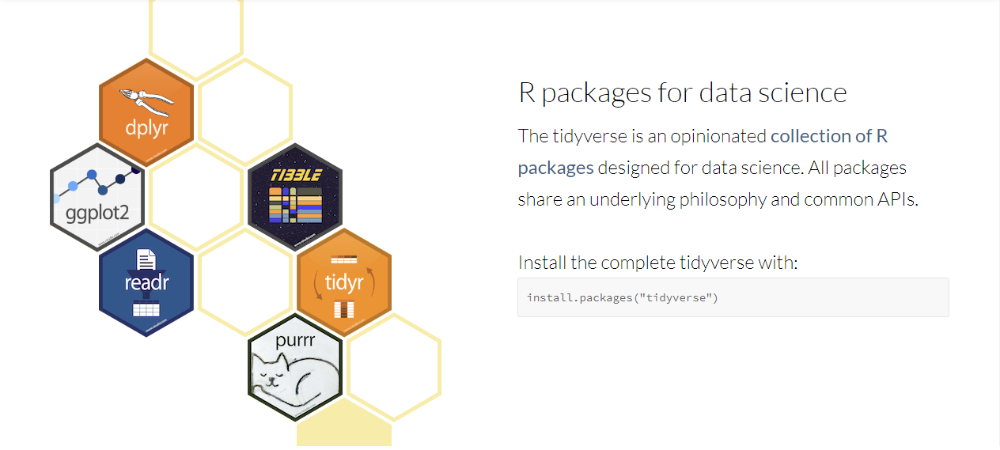

R Workshop: Module 2 (2)
Bobae Kang
January 31, 2018

This page contains the notes for the second part of R Workshop Module 2: R basics, which is part of the R Workshop series prepared by ICJIA Research Analyst Bobae Kang to enable and encourage ICJIA researchers to take advantage of R, a statistical programming language that is one of the most powerful modern research tools.
Links
Click here to go to the workshop home page.
Click here to go to the workshop Modules page.
Click here to view the accompanying slides for Module 2, Part 2.
Navigate to the other workshop materials:
- Module 1: Introduction to R (slides, note)
- Module 2: R basics
- Module 3: Data analysis in R
- Module 4: Data visualization in R
- Module 5: Statistical modeling in R (slides, note)
- Module 6: Sharing your analysis and more (slides, note)
R Basics (2): Gearing up for data analysis in R
R Data Frame
## [1] "Look, a data frame!"## column1 column2 column3 column4 column5
## 1 11 12 13 14 15
## 2 21 22 23 24 25
## 3 31 32 33 34 35
## 4 41 42 43 44 45
## 5 51 52 53 54 55What is a data frame?
- A tabular representation of data where each column is a vector of some type.
- think of Excel spreadsheets, SPSS tables, etc.!
- Can be seen as a list of vectors of the same length, but with additional functionalities for data analysis!
- accessing data in a data frame works similarly
- a list can be easily converted into a data frame using
as.data.frame()(… and vice versa, withas.list())
Example: Iris data
R comes with a data frame of the (famous) Iris flower dataset. Let’s take a look:
class(iris) # the class of iris object is "data.frame"## [1] "data.frame"is.data.frame(iris) # check if iris is a data.frame; TRUE, as expected## [1] TRUEstr(iris) # reports the "structure" of the data frame ## 'data.frame': 150 obs. of 5 variables:
## $ Sepal.Length: num 5.1 4.9 4.7 4.6 5 5.4 4.6 5 4.4 4.9 ...
## $ Sepal.Width : num 3.5 3 3.2 3.1 3.6 3.9 3.4 3.4 2.9 3.1 ...
## $ Petal.Length: num 1.4 1.4 1.3 1.5 1.4 1.7 1.4 1.5 1.4 1.5 ...
## $ Petal.Width : num 0.2 0.2 0.2 0.2 0.2 0.4 0.3 0.2 0.2 0.1 ...
## $ Species : Factor w/ 3 levels "setosa","versicolor",..: 1 1 1 1 1 1 1 1 1 1 ...head(iris, 5) # returns the first n rows of the data frame (default 6)## Sepal.Length Sepal.Width Petal.Length Petal.Width Species
## 1 5.1 3.5 1.4 0.2 setosa
## 2 4.9 3.0 1.4 0.2 setosa
## 3 4.7 3.2 1.3 0.2 setosa
## 4 4.6 3.1 1.5 0.2 setosa
## 5 5.0 3.6 1.4 0.2 setosadim(iris) # returns the dimension of the data frame (row column)## [1] 150 5nrow(iris) # returns the number of rows in the data frame## [1] 150ncol(iris) # returns the number of columns in the data frame## [1] 5colnames(iris) # returns a vector containing the column names ## [1] "Sepal.Length" "Sepal.Width" "Petal.Length" "Petal.Width"
## [5] "Species"iris$Sepal.Length # access a column by name
iris[[1]] # access the first column by index
iris[, 1] # yet another way to access the first column!## [1] 5.1 4.9 4.7 4.6 5.0 5.4 4.6 5.0 4.4 4.9 5.4 4.8 4.8 4.3 5.8 5.7 5.4
## [18] 5.1 5.7 5.1 5.4 5.1 4.6 5.1 4.8 5.0 5.0 5.2 5.2 4.7 4.8 5.4 5.2 5.5
## [35] 4.9 5.0 5.5 4.9 4.4 5.1 5.0 4.5 4.4 5.0 5.1 4.8 5.1 4.6 5.3 5.0 7.0
## [52] 6.4 6.9 5.5 6.5 5.7 6.3 4.9 6.6 5.2 5.0 5.9 6.0 6.1 5.6 6.7 5.6 5.8
## [69] 6.2 5.6 5.9 6.1 6.3 6.1 6.4 6.6 6.8 6.7 6.0 5.7 5.5 5.5 5.8 6.0 5.4
## [86] 6.0 6.7 6.3 5.6 5.5 5.5 6.1 5.8 5.0 5.6 5.7 5.7 6.2 5.1 5.7 6.3 5.8
## [103] 7.1 6.3 6.5 7.6 4.9 7.3 6.7 7.2 6.5 6.4 6.8 5.7 5.8 6.4 6.5 7.7 7.7
## [120] 6.0 6.9 5.6 7.7 6.3 6.7 7.2 6.2 6.1 6.4 7.2 7.4 7.9 6.4 6.3 6.1 7.7
## [137] 6.3 6.4 6.0 6.9 6.7 6.9 5.8 6.8 6.7 6.7 6.3 6.5 6.2 5.9iris[1, ] # access the first row by index## Sepal.Length Sepal.Width Petal.Length Petal.Width Species
## 1 5.1 3.5 1.4 0.2 setosairis[1, 1] # access a specific cell (first row of the first column)## [1] 5.1Creating a data frame
- Using
data.frame()- Using existing vectors as arguments
- Simultanesouly creating vectors and assigning column names to them
- Coercing a list using
as.data.frame()
Using data.frame()
- Using existing vectors
fruits <- c("apple", "banana", "clementine")
animals <- c("dogs", "cats", "llamas")
icecream_flavors <- c("chocolate", "vanila", "cookie dough")
df1 <- data.frame(fruits, animals, icecream_flavors)
print(df1)## fruits animals icecream_flavors
## 1 apple dogs chocolate
## 2 banana cats vanila
## 3 clementine llamas cookie dough- Simultaneously creating vectors and assigning names
df2 <- data.frame(
fruits = c("apple", "banana", "clementine"),
animals = c("dogs", "cats", "llamas"),
icecream_flavors = c("chocolate", "vanila", "cookie dough")
)
print(df2)## fruits animals icecream_flavors
## 1 apple dogs chocolate
## 2 banana cats vanila
## 3 clementine llamas cookie doughConverting a list using as.data.frame()
lt <- list(
fruits = c("apple", "banana", "clementine"),
animals = c("dogs", "cats", "llamas"),
icecream_flavors = c("chocolate", "vanila", "cookie dough")
)
df3 <- as.data.frame(lt)
print(df3)## fruits animals icecream_flavors
## 1 apple dogs chocolate
## 2 banana cats vanila
## 3 clementine llamas cookie doughTransforming a data frame
- change column names
- add / modify / remove columns
- add / modify / remove rows
- modify cell values
Change column names
colnames(df1) <- c("my_fruits", "my_animals", "my_flavors")
print(df1)## my_fruits my_animals my_flavors
## 1 apple dogs chocolate
## 2 banana cats vanila
## 3 clementine llamas cookie doughAdd columns
# using $ index
df1$my_colors <- c("red", "green", "orange")
# using cbind() function
my_cities <- c("Chicago", "New Work", "Los Angeles")
df1 <- cbind(df1, my_cities)
print(df1)## my_fruits my_animals my_flavors my_colors my_cities
## 1 apple dogs chocolate red Chicago
## 2 banana cats vanila green New Work
## 3 clementine llamas cookie dough orange Los AngelesModify columns
df1[["my_colors"]] <- c("maroon", "blue", "purple")
df1$my_cities <- c("Chicago", "London", "Paris")
df1## my_fruits my_animals my_flavors my_colors my_cities
## 1 apple dogs chocolate maroon Chicago
## 2 banana cats vanila blue London
## 3 clementine llamas cookie dough purple ParisRemove columns
# assinging NULL
df1$my_colors <- NULL
df1## my_fruits my_animals my_flavors my_cities
## 1 apple dogs chocolate Chicago
## 2 banana cats vanila London
## 3 clementine llamas cookie dough Paris# subsetting
df1 <- df1[, 1:3] # or c("my_fruits", "my_animals", "my_flavors")
df1## my_fruits my_animals my_flavors
## 1 apple dogs chocolate
## 2 banana cats vanila
## 3 clementine llamas cookie doughAdd rows
new_row <- data.frame(
my_fruits = "strawberry",
my_animals = "monkeys",
my_flavors = "butter pecan"
)
df1 <- rbind(df1, new_row)
df1## my_fruits my_animals my_flavors
## 1 apple dogs chocolate
## 2 banana cats vanila
## 3 clementine llamas cookie dough
## 4 strawberry monkeys butter pecanRemove rows
# subsetting
df1 <- df1[1:3, ]
df1## my_fruits my_animals my_flavors
## 1 apple dogs chocolate
## 2 banana cats vanila
## 3 clementine llamas cookie doughModify cells
# this doesn't work ... why?
df1$my_flavors[1] <- "mint chocolate chip"## Warning in `[<-.factor`(`*tmp*`, 1, value = structure(c(NA, 3L, 2L), .Label
## = c("chocolate", : invalid factor level, NA generateddf1## my_fruits my_animals my_flavors
## 1 apple dogs <NA>
## 2 banana cats vanila
## 3 clementine llamas cookie dough# because the column is a factor and only
# new values of the existing levels can be added
df1$my_flavors## [1] <NA> vanila cookie dough
## Levels: chocolate cookie dough vanila butter pecan# first we coerce the column into character class
df1$my_flavors <- as.character(df1$my_flavors)
# now works!
df1$my_flavors[1] <- "mint chocolate chip"
df1## my_fruits my_animals my_flavors
## 1 apple dogs mint chocolate chip
## 2 banana cats vanila
## 3 clementine llamas cookie doughExtending data frame
- In practice, R’s original
data.frameis rarely used since better alternatives are available.tibbledata.table
- Both alternatives are extension of the original
data.frame- either can be manipulated just like a data frame
tibble
## # A tibble: 5 x 5
## column1 column2 column3 column4 column5
## <dbl> <dbl> <dbl> <dbl> <dbl>
## 1 11.0 12.0 13.0 14.0 15.0
## 2 21.0 22.0 23.0 24.0 25.0
## 3 31.0 32.0 33.0 34.0 35.0
## 4 41.0 42.0 43.0 44.0 45.0
## 5 51.0 52.0 53.0 54.0 55.0- Part of the
tidyverseframework (we’ll come back to this) - More easily understood
tidyversesyntax - Refined print method
- Coercing a data frame into a tibble can be done with
as_tibble()fromtibblepackage - See here for more on tibble
data.table
## column1 column2 column3 column4 column5
## 1: 11 12 13 14 15
## 2: 21 22 23 24 25
## 3: 31 32 33 34 35
## 4: 41 42 43 44 45
## 5: 51 52 53 54 55- Made available via
data.framepackage. - Highly optimized for larger tables (e.g. >100K rows).
- Compact syntax for advanced slicing and dicing of tablular data.
- Coercing a data frame into a data table can be done with
as.data.table() - See here for more on data.table
R Add-On Packages

Source: DataCamp
What are add-on packages?
The capabilities of R are extended through user-created packages, which allow specialized statistical techniques, graphical devices, import/export capabilities, reporting tools […], etc. - “R (programming language)”, Wikipedia
Using packages
# first we should install the desired package
install.packages("some_package")
# then we import the package to use its functionalities
library(some_package)Two ways of installing packages
- From CRAN (Comprehensive R Archive Network)
- tested and trusted
- using
install.packages("package")
- From specific Github repositories (i.e., development versions)
- latest versions with cutting-edge features
- using
install_github("author/package")install_github()is available viadevtoolspackage.
Tidyverse Framework
Source: tidyverse.org
Tidy approach to data science
Tidy data is data where:
- Each variable is in a column
- Each observation is a row
- Each value is a cell.

Source: Hadley Wickham, 2017, R for Data Science
- See here for more on tidy data
Untidy data?
Anything that is not tidy!
- Multiple variables in a single column
- Multiple observations in a single row
- Multiple rows for a single observation
- Multiple values in a single cell
- Multiple cells for a single value
Untidy example 1
##
## Attaching package: 'dplyr'## The following objects are masked from 'package:stats':
##
## filter, lag## The following objects are masked from 'package:base':
##
## intersect, setdiff, setequal, union## Sepal.Length/Width Petal.Length/Width Species
## 1 5.1/3.5 1.4/0.2 setosa
## 2 4.9/3 1.4/0.2 setosa
## 3 4.7/3.2 1.3/0.2 setosa
## 4 4.6/3.1 1.5/0.2 setosa
## 5 5/3.6 1.4/0.2 setosa
## 6 5.4/3.9 1.7/0.4 setosaUntidy example 2
## index type value Species
## 1 1 Sepal.Length 5.1 setosa
## 2 1 Sepal.Width 3.5 setosa
## 3 1 Petal.Length 1.4 setosa
## 4 1 Petal.Width 0.2 setosa
## 5 2 Sepal.Length 4.9 setosa
## 6 2 Sepal.Width 3.0 setosa
## 7 2 Petal.Length 1.4 setosa
## 8 2 Petal.Width 0.2 setosa
## 9 3 Sepal.Length 4.7 setosa
## 10 3 Sepal.Width 3.2 setosaTidyverse core packages
ggplot2for data visualizationdplyrfor data manipulationtidyrfor creating “tidy data”readrfor data import/exportpurrrfor loop operationstibblefor data representation
Good Code, Bad Code

Source: The New York Times
Why style guide?
The goal [of the style guide] is to make our R code easier to read, share, and verify. - Google’s R Style guide
- Readability
- Productivity
- Reproducibility
Which style guide?
- Currently, there is no single style guide adopted by the R community as the standard.
Personal recommendations
- Start with the tidyverse style guide
- Consider adding extra rules only if they will help your team to better collaborate and maintain code
- Keep the changes to minimum so that code remains accessible to others, including future teammates and even your future self!
Object naming
- Be descriptive yet concise
- somewhat dependent on the shared knowledge on the subject matter
- Use underscore for names consisting of multiple words
- Nouns for variables, verbs for functions
- Avoid re-using common names for functions and variables
- Using “reserved words” to assign objects will throw errors
Naming a variable (e.g. for firearm arrests)
# Good
firearm_arr
fa_arr
# Bad
arrests_with_firearm_charges # too verbose
firearmArrests # violating underscore convention
FireArm_Arrests # mixing underscore with other way of naming
farr # not descriptive enough
x # not descriptive at allNaming a function (e.g. for counting arrests)
# Good
count_arr <- function(x) { ... }
# Bad
num_arr <- function(x) { ... } # noun for a function
do_arr <- function(x) { ... } # not descriptive enough
count <- function(x) { ... } # too generic (common name)Reserved words in R
if else repeat while function for
in next break # used in loops, conditions, functions
TRUE FALSE # logical values
NULL # undefined
Inf # infinity
NaN # Not a Number
NA # not available (missing)
NA_integer_ NA_real_
NA_complex_ NA_character_ # NA for atomic vector types
... # dot method for one function to pass arguments to anotherWhitespaces for readable code
- Add a space
- around operators (
+,-,<,=, etc.)- Exceptions include
:,::, and:::
- Exceptions include
- after a comma (but not before–like in regular English)
- before a left paranthesis
(, except when it is a function call
- around operators (
- Extra spacing for alignment of code
- Indentation for clarifying hierarchy
Adding spaces
# Good
greetings <- paste("Hello", "World!", sep = " ")
df[2, ]
x <- 1:10
base::Random() # calling a function with specifying the package
# Bad
greetings<-paste("Hello","world!",sep="")
df[ 2,]
x<- 1 : 10
base :: Random ()Extra spacing
# for aligning function arguments
some_function (
first_argument = value_1
another_argument = value_2
example = value_3
)
# for aligning variable assignments
numbers <- c(1, 2, 3)
roman_numerals <- c("I", "II", "III")
letters <- c("a", "b", "c") Indentation
# Good
if (x > 0) {
i = 0
while (i < 10) {
message("Wait, I'm in a loop")
i <- i + 1
}
message("x is positive.")
} else {
message("x is not positive")
}
# Bad
if (y > 0) {
j = 0
while (j < 10) {
message("Wait, I'm in a loop")
j <- j + 1
}
message("y is positive.")
} else {
message("y is not positive")
}Most importantly…
- Be consistent!
- Be concise!
- Be clear!
Comments for intelligible code
#symbol) for clarification